In China Employee Termination: Pulse Control-Stack Brief for Foreign Employers (2026 Testing Run)
Key takeaways
- For foreign employers, China termination outcomes improve when you build a control stack: legal, evidence, communication, settlement, and exception layers.
- Legal route selection should come first, but practical defensibility requires every downstream layer to align.
- Most disputes are not random; they emerge where one control layer is missing or weak.
- Payroll and IIT settlement controls should be treated as part of legal risk architecture.
- A layered model is easier to scale across entities than one-off case firefighting.
Pulse lead: impact-first update
Foreign employers often manage China terminations as a sequence of tasks. In practice, dispute resilience depends more on layered controls than task order alone. A case may look compliant at the route level but still fail because evidence indexing is weak, manager communication drifts, or settlement records are incomplete. The framework has not fundamentally changed; execution depth remains the critical differentiator.
This briefing uses a control-stack format to translate legal context into a deployable operating architecture. The objective is simple: if one layer weakens, the next layer should catch risk before it reaches dispute stage.
Plain-language legal context (first)
China’s Labor Contract Law defines permissible termination routes, while implementation regulations and judicial interpretation shape practical dispute review. For non-local teams, the core takeaway is straightforward: legal route validity is necessary but not sufficient. Reviewers look for consistency across route rationale, records, communication behavior, and settlement outcomes.
Therefore, practical governance should start with legal framing but immediately map that framing into control layers with clear owners.
The control stack (five layers)
Layer 1: legal-route control
Define route type, legal anchor, and risk grade before any employee-facing action. If route language differs across teams, freeze and realign.
Layer 2: evidence-integrity control
Maintain centralized evidence index with source/date references and chronology checks. Reject fragmented or backfilled records.
Layer 3: communication-coherence control
Align manager script, written notice, and meeting records. In bilingual contexts, define controlling legal-language text and reviewed translation.
Layer 4: settlement-control layer
Lock settlement model (severance, wages, leave payout, IIT method, payment timeline) with versioning and approvals before execution.
Layer 5: exception/escalation control
Predefine fallback routes for refusal-to-sign, late data, HQ override pressure, and new facts. Log exception owner and approval path.
Practical implications for foreign employers
- Layered controls reduce dependency on individual manager judgment.
- Dispute risk decreases when each layer has objective pass/fail criteria.
- Multi-city operations benefit from local-variance triggers embedded in escalation layer.
- Audit readiness improves when layers produce linked evidence trails.
In practical terms, this means foreign headquarters can keep strategic control without micromanaging every local case. The stack creates a common language across legal, HR, payroll, and finance: each function knows what “ready” looks like before a case moves forward. It also improves board-level reporting quality, because case status is tied to control evidence rather than narrative confidence. Over time, this reduces both surprise disputes and internal friction between regional and local teams, while making post-case audits faster and more reliable.
Daily operations SOP (role-by-role)
Gate 1: route approval (HR + legal)
Create route memo with legal basis, risk grade, and escalation owner. No employee communication before approval.
Gate 2: evidence sign-off (Manager + HR)
Compile records, validate chronology, and clear integrity threshold. If threshold fails, reassess route.
Gate 3: settlement lock (Payroll + finance + HR)
Finalize settlement model and IIT treatment; version-control and approval timestamps required.
Gate 4: communication alignment (HR + manager + legal)
Approve script package, notice documents, and meeting-note template.
Gate 5: controlled execution (HR owner)
Run meeting and service actions through one timestamped event log, including payroll trigger and receipt evidence.
Gate 6: post-event assurance (Legal + HR + payroll)
Within 48 hours, audit closure package and archive with signoff.
Required document checklist
- Route memo (legal anchor + risk grade)
- Evidence index and integrity score
- Communication package approval
- Settlement worksheet and version record
- Approval chain log
- Service and receipt documentation
- Final-pay and IIT completion proof
- Exception log + archive manifest
Exception handling playbook
Route approved but evidence degrades
Pause execution; reopen route memo; legal reassessment required.
Employee refuses acknowledgment
Use witness-backed protocol and lawful alternative service methods.
Settlement numbers change post-approval
Freeze communication, reconcile model, reissue one approved version.
HQ asks to accelerate beyond risk tolerance
Escalate through formal risk-acceptance channel; defer absent signoff.
System implementation notes
Configure control-stack fields in HRIS/payroll workflows:
- Layer status fields (L1-L5) with pass/conditional/fail
- Missing-critical-item flags
- Settlement version ID and IIT logic notes
- Exception type and fallback path
- Communication event linkage to documents
- Archive lock and controlled reopen access
Common mistakes and prevention
Mistake: legal-first but layer-light execution
Prevent: require all five layers green before action.
Mistake: one team owns too much silently
Prevent: explicit role ownership by layer.
Mistake: settlement handled as postscript
Prevent: settlement lock as mandatory gate.
Mistake: local variance ignored
Prevent: city-specific escalation notes in L5.
What to do now
- Implement five-layer control status in active termination cases.
- Add pass/fail criteria per layer.
- Make settlement lock a hard-stop rule.
- Centralize evidence indexing and remove chat-only dependencies.
- Train managers on communication-coherence controls.
- Add city-specific escalation triggers.
- Audit last 10 cases by layer failure location.
- Patch SOP and workflow fields.
- Track monthly layer-failure metrics.
- Re-benchmark in each hourly quality loop.
What to watch next
- Continued practical scrutiny of evidence and procedure coherence.
- Ongoing importance of payroll-tax settlement transparency.
- Rising value of control-layer maturity in cross-border governance.
- Persistent city-level variation requiring localized escalation logic.
FAQ
Is the control-stack model legally required?
No. It is a governance model to improve consistency and reduce avoidable disputes.
Can a strong legal route compensate for weak execution layers?
Usually not. Weak layers can undermine route defensibility.
Why place payroll inside the control stack?
Because settlement and IIT handling are frequent dispute triggers.
Is this model suitable for small teams?
Yes, by scaling controls to size while preserving core layer integrity.
When should external counsel be mandatory?
High-risk unilateral cases, restructuring, refusal events, protected-sensitivity cases, and multi-city complexity.
Legal depth appendix (secondary)
This brief is grounded in three anchors: PRC Labor Contract Law, State Council implementation regulations, and SPC labor-dispute interpretation guidance. Their combined practical signal is consistent: legal route, procedural fairness, and documentary reliability must stay aligned through settlement completion.
Disclaimer
This content is informational only and not legal advice. China labor outcomes are fact-specific and locally sensitive. Seek qualified PRC legal advice before action.
Sources
- National People’s Congress. Labor Contract Law of the PRC (English). http://www.npc.gov.cn/zgrdw/englishnpc/Law/2007-12/13/content_1384064.htm (accessed 2026-03-01).
- State Council. Regulations for the Implementation of the Labor Contract Law (Decree No. 535). https://www.gov.cn/gongbao/content/2008/content_1124615.htm (accessed 2026-03-01).
- Supreme People’s Court. Interpretation on labor dispute application issues (Fa Shi [2020] No. 26). https://www.court.gov.cn/fabu/xiangqing/243981.html (accessed 2026-03-01).
- China Briefing (Dezan Shira & Associates). Employee Termination in China (updated 2025-10-17). https://www.china-briefing.com/news/employee-termination-in-china/.
- Littler. Key Recent Developments in China’s Employment Law (2024-03-20). https://www.littler.com/news-analysis/asap/key-recent-developments-chinas-employment-law-china-us-comparative-perspective.
- PwC Worldwide Tax Summaries. People’s Republic of China: Individual Taxes on Personal Income (2025-01-15). https://taxsummaries.pwc.com/peoples-republic-of-china/individual/taxes-on-personal-income.
Need help from China-Payroll.com?
China-Payroll.com supports foreign employers with compliance-first termination execution, combining legal route governance, payroll settlement controls, and evidence-ready operational workflows.
Need local employment support in China?
If you need a compliance-first partner for hiring, payroll, and risk controls in China, China-Payroll.com can help evaluate the right setup.
Image Prompt Pack
Create a 16:9 hero image for article title: 'In China Employee Termination: Pulse Control-Stack Brief for Foreign Employers (2026 Testing Run)'. Scene: global operations team evaluating workforce model options for China market entry. Include motifs: decision m…